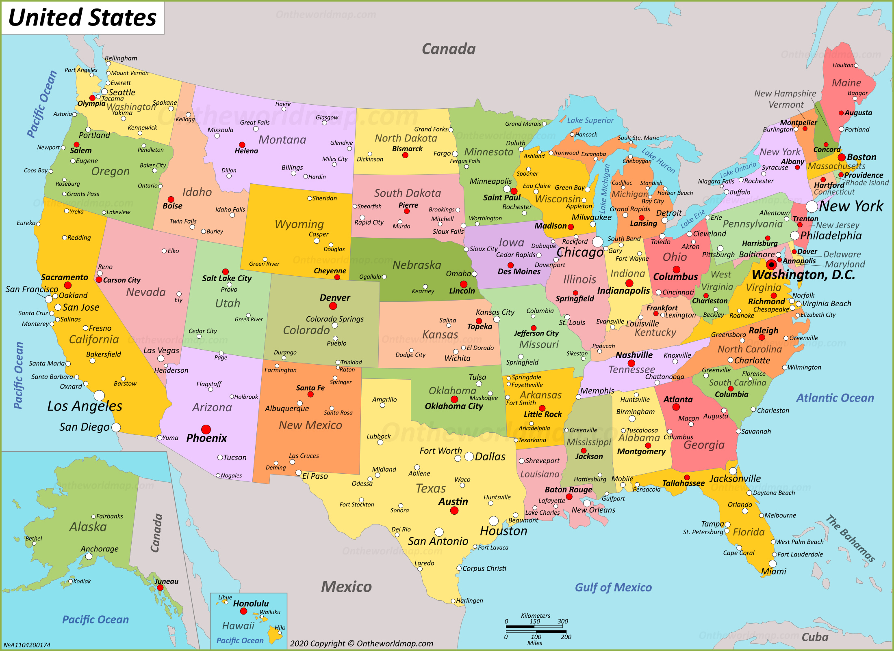

← Back to Hub
📍
US City Explorer
Explore all 50 states and thousands of cities
⌕
×
❔ Help
⟲ Reset View
⚙
+
−
⌖
◈

Click on a state or city to zoom in • Scroll to zoom • Drag to pan
How to use
This app runs fully offline using your map image as the base.
Click any highlighted state region to zoom to it.
Click any city dot to zoom to that city.
Type in the search bar for suggested matches.
Similar names are separated by state and county.
Close